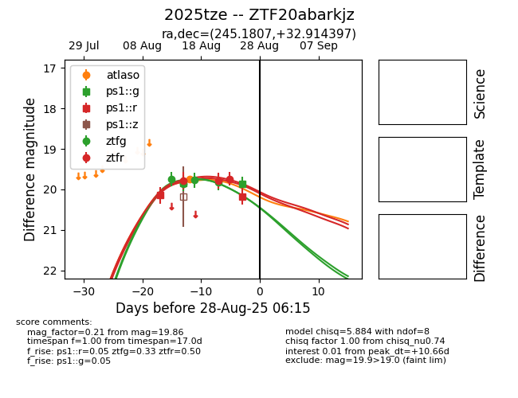

Target 2025tze at 2025-08-28 06:22, see:
FINK: fink-portal.org/ZTF20abarkjz
Lasair: lasair-ztf.lsst.ac.uk/objects/ZTF20abarkjz
ALeRCE: alerce.online/object/ZTF20abarkjz
TNS: wis-tns.org/object/2025tze
YSE: ziggy.ucolick.org/yse/transient_detail/2025tze
alt names
2025tze (yse,tns)
ZTF20abarkjz (ztf,fink)
coordinates:
equatorial (ra, dec) = (245.1807,+32.91440)
galactic (l, b) = (53.5241,+44.78486)
photometry
last atlaso=19.74, ps1::g=19.86, ps1::r=20.17, ztfg=19.83, ztfr=19.74
1 atlaso, 2 ps1::g, 2 ps1::r, 4 ztfg, 3 ztfr detections
